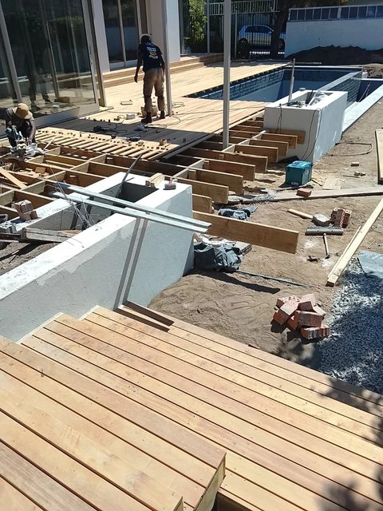
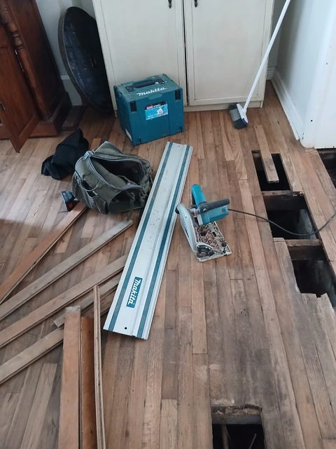
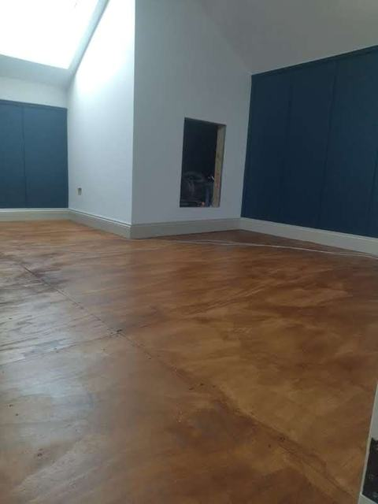
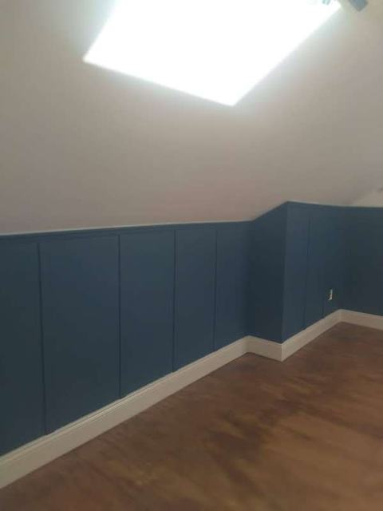
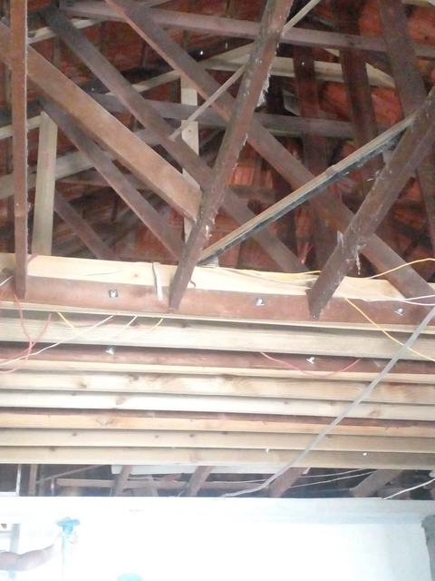
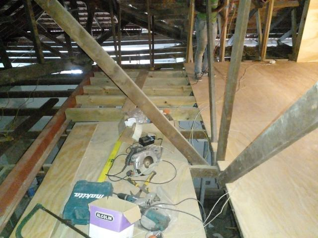
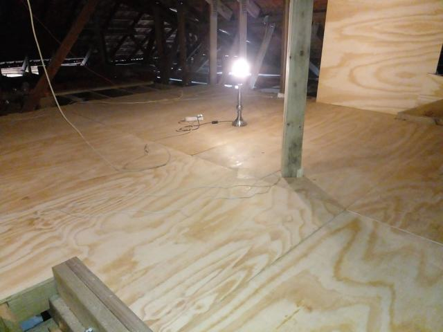
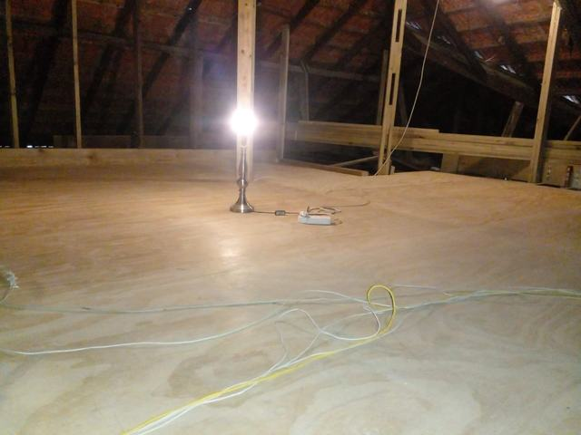

Renovation & woodworks in Rondebosch
Rondebosch has large family homes, older character houses near the schools and UCT, and plenty of gardens and pools. We're often asked for family kitchen renovations, built-in cupboards and study units, hardwood pool decks, and timber floor repairs.
Our work in Rondebosch
Rondebosch first, then more of our work.









Working in Rondebosch
Rondebosch is one of Cape Town's oldest suburbs, home to UCT, Rondebosch Common and several well-known schools. It has large family homes, older character houses with timber floors, and many student houses. Our Rondebosch photos show an attic converted into an office, from new ceiling joists and floor framing to a finished plywood floor and panelled walls, as well as an old timber floor opened up for repair and a hardwood pool deck being built.
Kitchens · Built-in cupboards · Doors & garage doors · Furniture · Decks · Renovations →
Questions from Rondebosch
Can you fit a full kitchen in Rondebosch?
Yes. From design and measuring to installation, one team handles your kitchen, at a fixed price agreed upfront.
Can you turn an attic into a usable room?
Often, yes. We check the roof structure, add joists and a proper floor, then line the walls. In Rondebosch we've converted an attic into an office.
Can you repair just part of an old timber floor?
Yes. We open up the damaged section, fix the joists and subfloor, and fit matching boards.